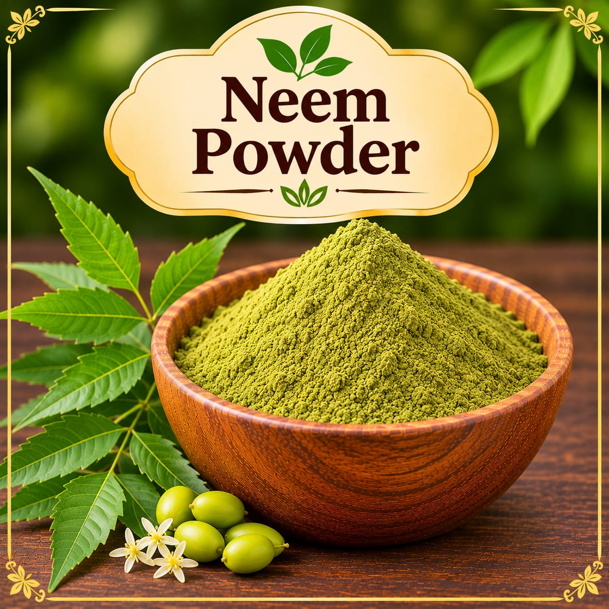
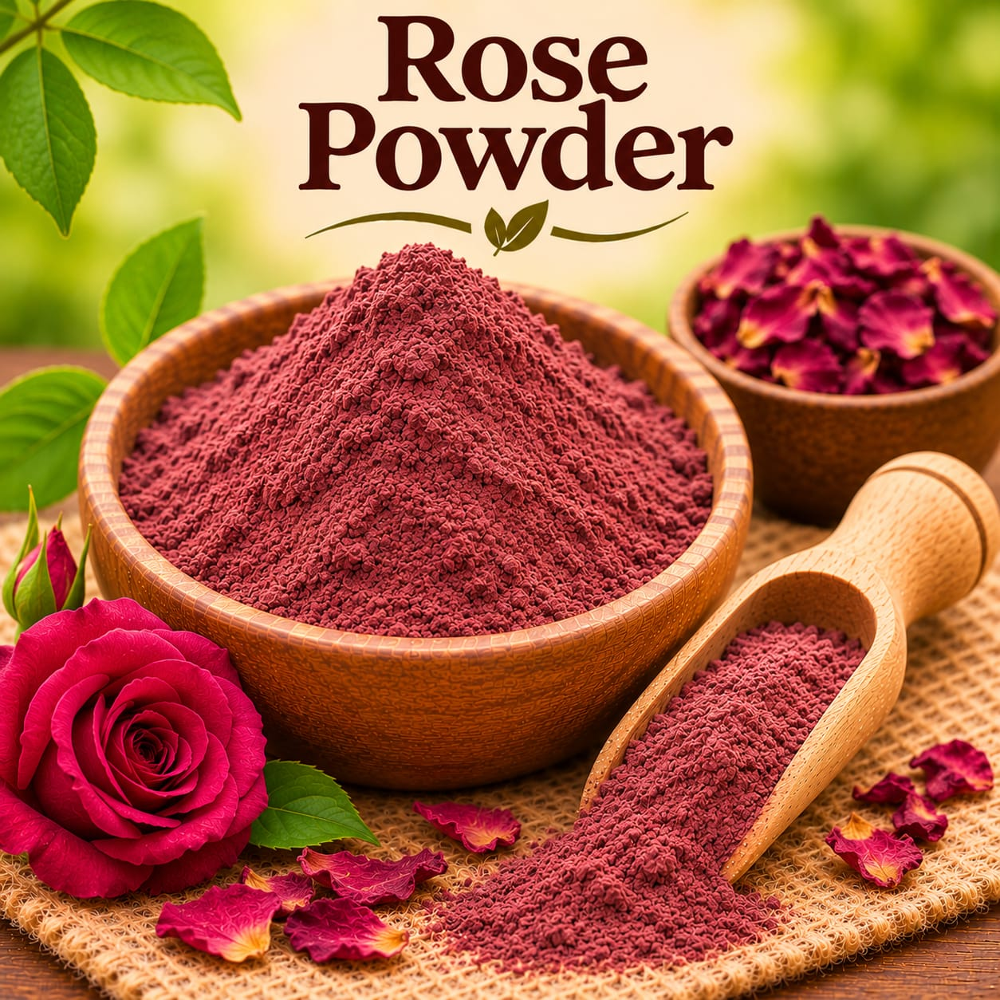
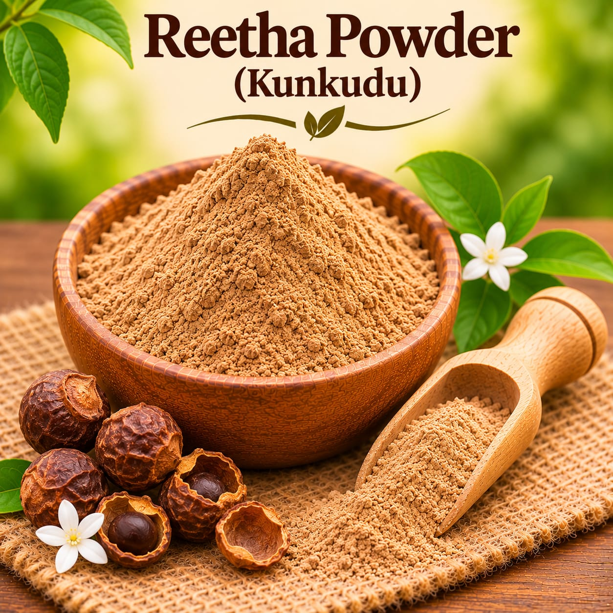

Botanical powder
Neem Powder
Finely milled neem leaves for a botanical ingredient collection.
Ask for current priceAsk
Explore finely milled botanical powders from Sahaj Organics in Chittoor, India. Browse the collection below and contact us to confirm current prices, sizes, and availability.
Browse all botanical powdersBotanical powders offer a ready-milled format for makers who work with dry ingredients. Check the product details and confirm that each ingredient is suitable for your own formula.

Finely milled neem leaves for a botanical ingredient collection.

Finely milled rose petals for botanical blends and formulations.

Finely milled reetha, also known as soapnut powder.
Ask us which products are currently available and request the latest price before ordering.
Formulating with a specific ingredient? Contact Sahaj Organics to ask about current availability and suitable product details.